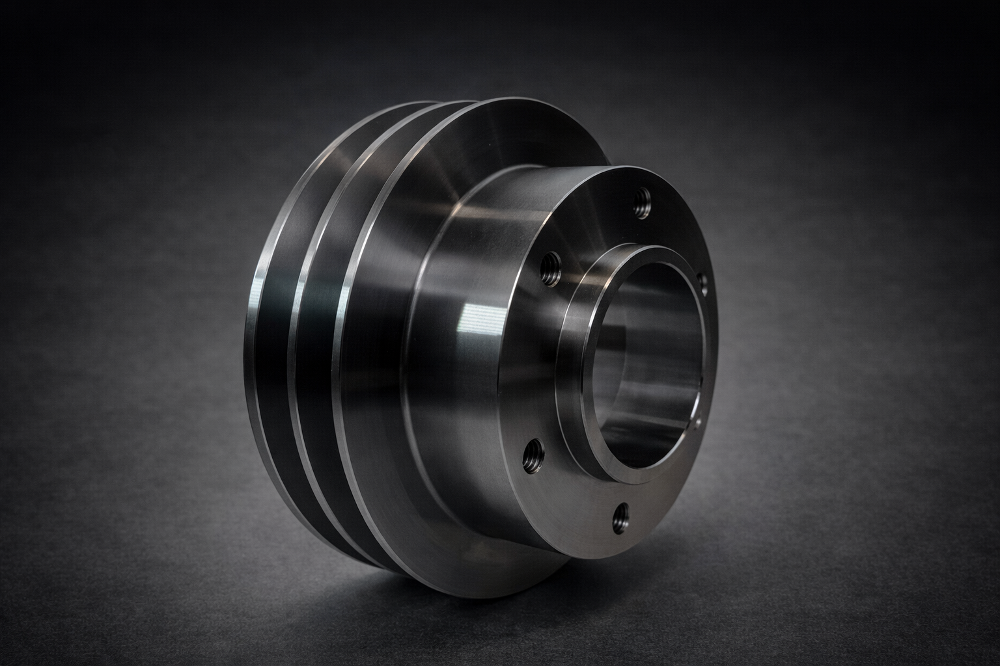

CNC-SvarvningCNC Turning
CNC-svarvning av erfarna teknikerCNC turning by experienced technicians
Behöver du hjälp med CNC-svarvning? Vi utför allt från enkel till komplicerad CNC-svarvning. Med vår maskinpark och våra erfarna tekniker kan vi producera högprecisionskomponenter av olika storlekar och komplexitet. Med hjälp av vår kunskap och maskinpark kan vi leverera resultat som imponerar oavsett volym.Do you need help with CNC turning? We perform everything from simple to complex CNC turning. With our machine park and experienced technicians, we can produce high-precision components of various sizes and complexity. With our expertise and machinery, we deliver impressive results regardless of volume.
Kontakta ossContact us
Teknisk informationTechnical information
MaskinerMachines
- Mazak Quick Turn 250 MMazak Quick Turn 250 M
- Nakamura Tome TMC-300Nakamura Tome TMC-300
- Fullt utrustad med verktygsväxling och styrningFully equipped with tool change and control
Max diameterMax diameter
320 mm
Max längdMax length
1500 mm
MaterialMaterials
Metaller:Metals: Stål, rostfritt stål, aluminium, mässing, brons, koppar.Steel, stainless steel, aluminum, brass, bronze, copper.
Plast:Plastics: Nylon, PE, POM, PP.Nylon, PE, POM, PP.